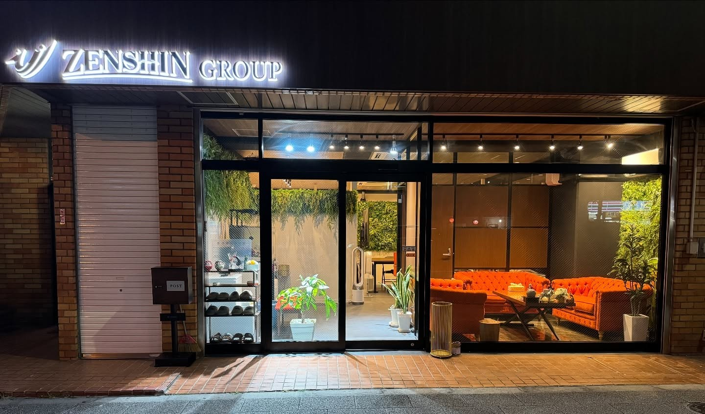
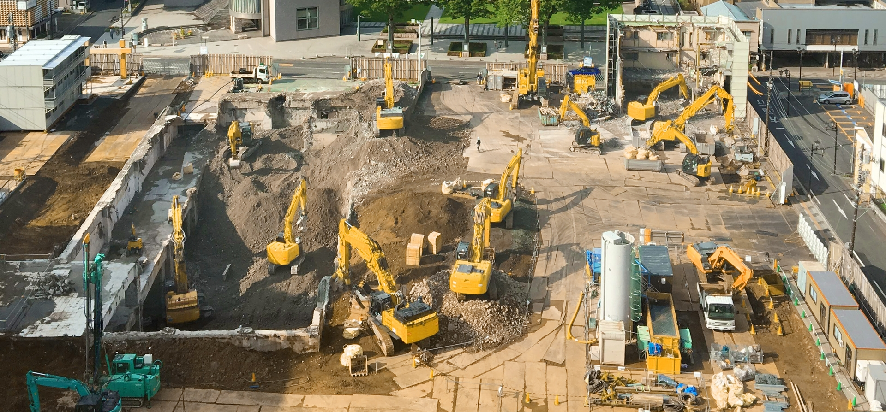
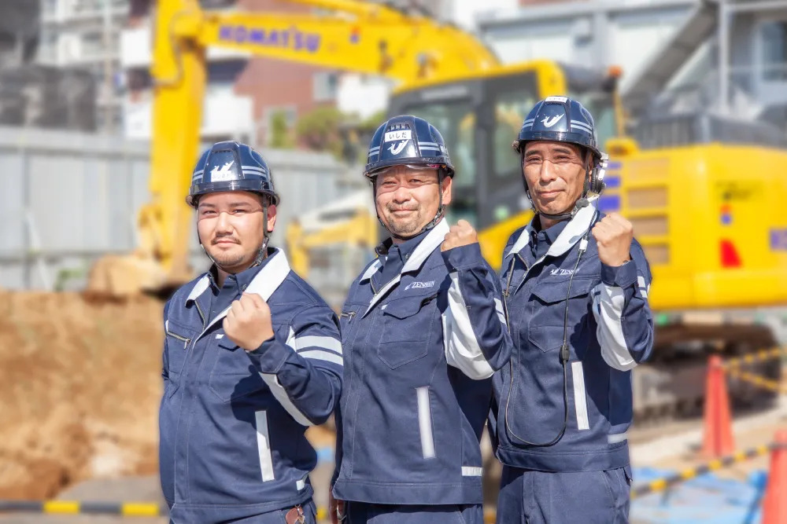
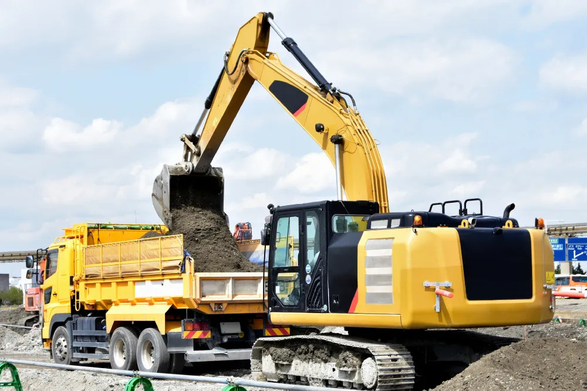
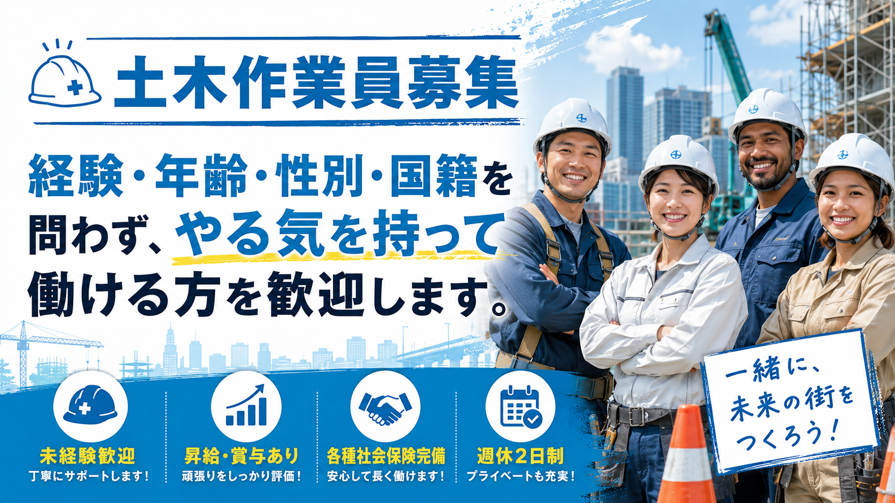

株式会社全真工業は、東京都板橋区を拠点に、野丁場を主体とした土工事一式請負工事を行っています。
新築マンションやビル、駅前再開発など、さまざまな建築・土木現場に携わり、現場ごとの条件に合わせた施工を行っています。土工事を中心に、残土運搬処分や産業廃棄物収集運搬にも対応し、首都圏全域の現場を支えています。
品質・安全・コンプライアンスを重視しながら、安心して任せられる施工体制を整えています。


東京都板橋区を拠点に、首都圏全域で施工を行っています。新築マンション、ビル、駅前再開発など、大規模な現場にも対応できる体制を整えています。
建設現場では、確かな施工品質と安全管理が欠かせません。全真工業では、一つひとつの現場に真剣に向き合い、ルールを守った安心の施工を大切にしています。
土工事一式だけでなく、残土運搬処分や産業廃棄物収集運搬にも対応しています。現場に必要な作業を一貫して相談できるため、スムーズな進行をサポートできます。

野丁場を主体とした土工事一式を請け負っています。建築現場や土木現場の基礎となる工程を担い、安全と品質に配慮した施工を行います。
現場の状況に合わせて、とび・土工に関わる作業や管理に対応しています。マンション、ビル、再開発現場など、幅広い現場での施工が可能です。
工事現場で発生する残土の運搬処分にも対応しています。現場の流れを止めないよう、効率的で安全な運搬を心がけています。
建設現場で発生する産業廃棄物の収集運搬業務も請け負っています。法令やルールを守り、適切な対応を行います。
重機燃料への燃料促進剤の活用や、ハイブリッド車・電気自動車の導入など、CO2削減に向けた取り組みも進めています。

工事内容や現場の状況により、必要な作業や対応方法は異なります。
全真工業では、まず内容を丁寧に伺い、現場に合わせた施工内容をご案内いたします。
首都圏で建築・土木に関するご相談がございましたら、
お気軽にお問い合わせください。

株式会社全真工業では、事業拡大に伴い、土工事やとび・土工の現場で活躍してくれるスタッフを募集しています。現場作業、現場管理、オペレーターなど、あなたの力を活かせる場所があります。
頑張りをしっかり評価する成果主義の勤務制度を取り入れており、年齢やキャリアに関係なく、努力次第で収入アップを目指せます。
株式会社全真工業
〒173-0023
東京都板橋区大山町２３−５ 仲田ハイツ 1階
営業時間: 10:00〜17:00
定休日: 土曜日・日曜日